Katy's Story at a Glance
Cane Island
The land was originally known as 'Cane Island', due to the creek that ran through historic Katy's area an was overflowing with tall cane plants. At this time, the land was used by indigenous tribes for hunting and later farmland for early settlers.
Introduction of the Missouri-Kansas-Texas Railroad
The MKT (Missouri - Kansas - Texas) is built through this area to bring crops to export and import goods. These included cattle, cotton, coal, and future settlers. This early prairie settlement would later become one of the most booming cities in Texas, beginning with this railroad. This railroad would later become the name-sake of Katy (MKT ---> Katy). As the station became more popular, more families migrated to Katy in search of jobs and a new home.
First Discovery of Oil
The first discovery well for the Katy's Oil and Gas Field, near the southeast corner of Waller County, was first drilled during this time. This then led Katy to extract 'liquid hydrocarbons from gas'. (essentially taking oil and natural gas from a reserve and bringing it to the surface). Along with Houston, which had lots of oil refineries, they became the most important 'gas condensate field in the US during WW2. From then on, many more oil fields would be discovered and drilled.
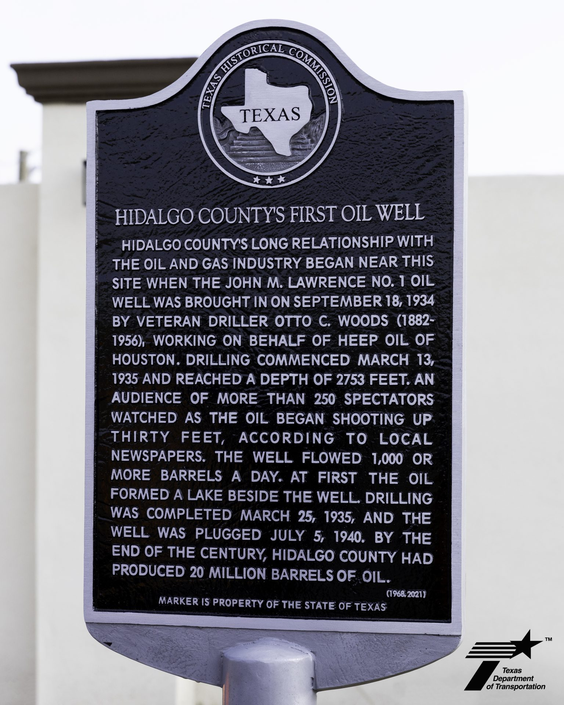

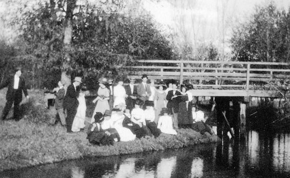
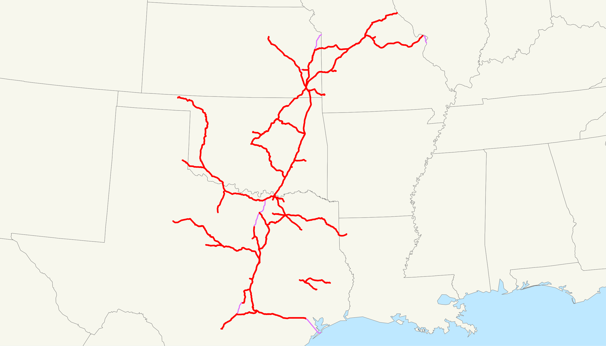

Image 1: Emily D'Gyves / MyRGV · Image 2: Jp.spring / Wikimedia Commons, Public Domain · Image 3: Doniago / Wikimedia Commons, Public Domain
From Rice Capitol to Suburbs
Rice fields were one of the largest industries in Historic Katy. In fact, it was once known as the "Rice Capitol". However, due to the increasing amount of migrants to this city, there has been significant drop in rice fields. The land has been replaced with homes to acommodate the growing population, and more stores/workplaces for the growing workforce.
The first image represents one of Katy's most well known landmarks: "J.V. Cardiff & Sons Rice Dryer" located in Downtown Katy. It is an abandoned rice silo.
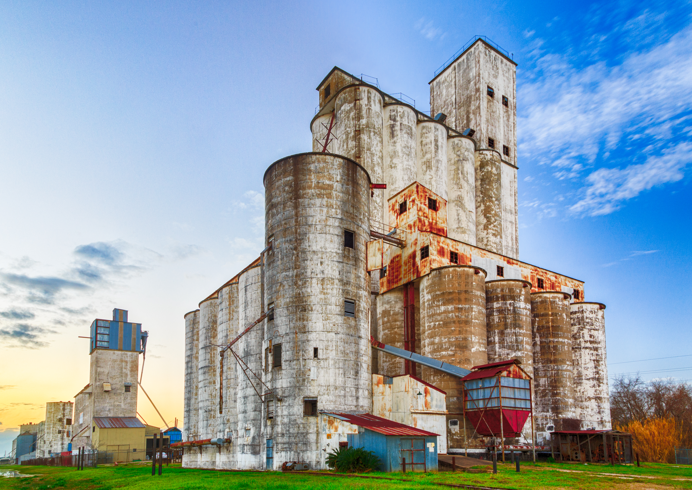
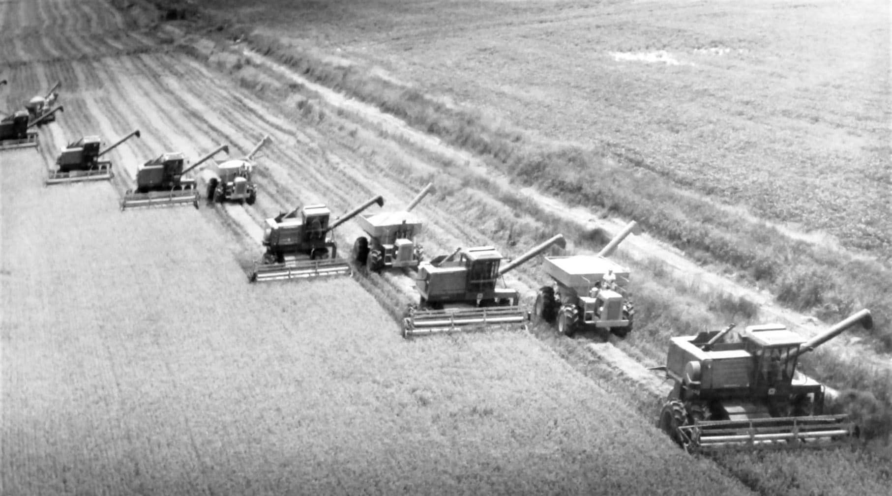
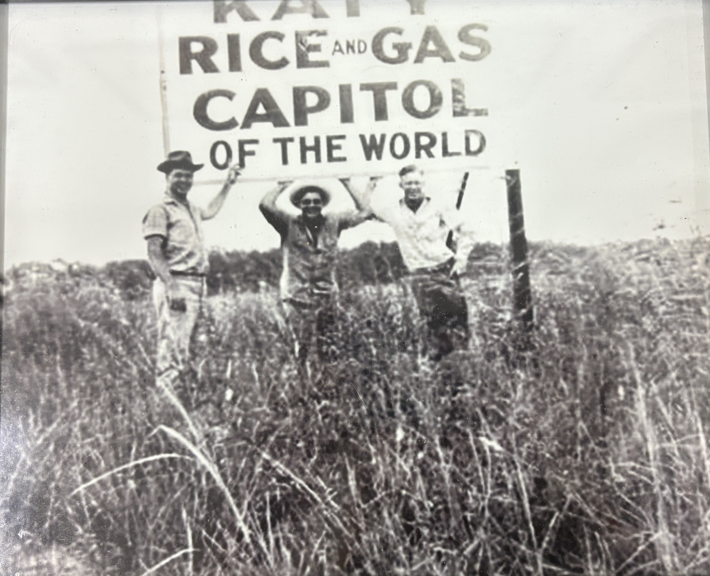
Image 1: Srini Sundarrajan / Flickr, CC BY-NC-SA 2.0 · Images 2 & 3: Courtesy of The Johnny Nelson Katy Heritage Museum
Katy Rice Fields Timeline
2,000 - 5,000 Acres
It was first introduced in 1901. Because of Katy's humid climate and fertile soil, it was a great spot for early farmers to start cultivating. During this time, farmers typically had around 80 acers per farm.
5,000 - 15,000 Acres
One of the most known land purchases during this time was from John V. Cardiff (2,000 acres). His rice silo's are still present today (see image carousel).
15,000 - 25,000 Acres
The Great Depression was during this time. Land was extremely cheap.
60,000 - 75,000 Acres
This was the peak rice cultivation inside the Katy region.
60,000 - 70,000 Acres
During this time the Katy Freeway opened, and was the catalyst for urban sprawl.
45,000 - 70,000 Acres
There is a decrease due to the growing suburban.
30,000 - 45,000 Acres
In 1999, a rice drying facility retired and shut down. This was the J.V. Cardiff Silo we see today.
5,000 - 15,000 Acres
By the 1990s, urbanization was booming. Since the 1950s, there has been a 1287% increase of population.
Less than 1,000 Acres
In Modern Katy, there is less than 1,000 acres. However, in Katy Prairie, there is around 5,000 - 10,000 acres. It has been pushed outside the city limits. Some farms are still active and maintain the rice farming tradition, yet there is urban development, high labor/farming costs, and water shortages catching up.
Katy's Population Over Time
Katy has experienced one of the most dramatic population booms in Texas history. From a small railroad town of just a few hundred residents in the early 1900s, the city and its surrounding area has grown into a community of over 25,000 within city limits and more than 500,000 in the greater Katy area.
Loading population data...
Data: US Census Bureau Decennial Census & American Community Survey. Pre-1990 figures are historical estimates from local records and the Texas State Historical Association.
The Road That Changed Everything
Interstate-10, or known as I-10, is a highway that spans from Santa Monica, California, to Jacksonville, Florida. It is 2460 miles, and is one of the longest.
There has been an increase in more roads being added, and the surrounding ranches marked in the historic map are replaced with various restaurants, and commerical buildings, corporations, malls, and houses.
Old map (overlay) courtesy of The Johnny Nelson Katy Heritage Museum
Baker Road Over Time
Old map (overlay) courtesy of The Johnny Nelson Katy Heritage Museum
Katy's Energy Legacy
The image below was the Humble Oil Katy Gas Station that ran from 1948-1949.
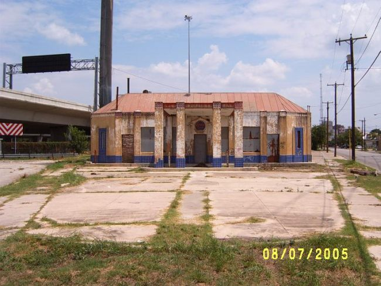
Image: Brian Purcell / Texashighwayman.com
These various images below show the land development and use of the oil and gas fields in Katy.
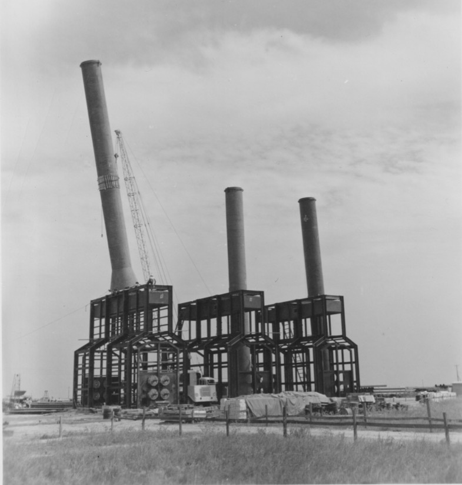
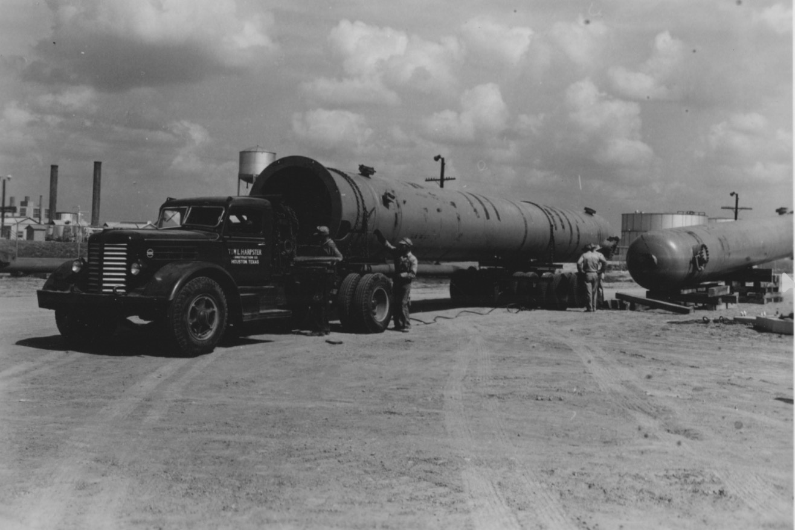
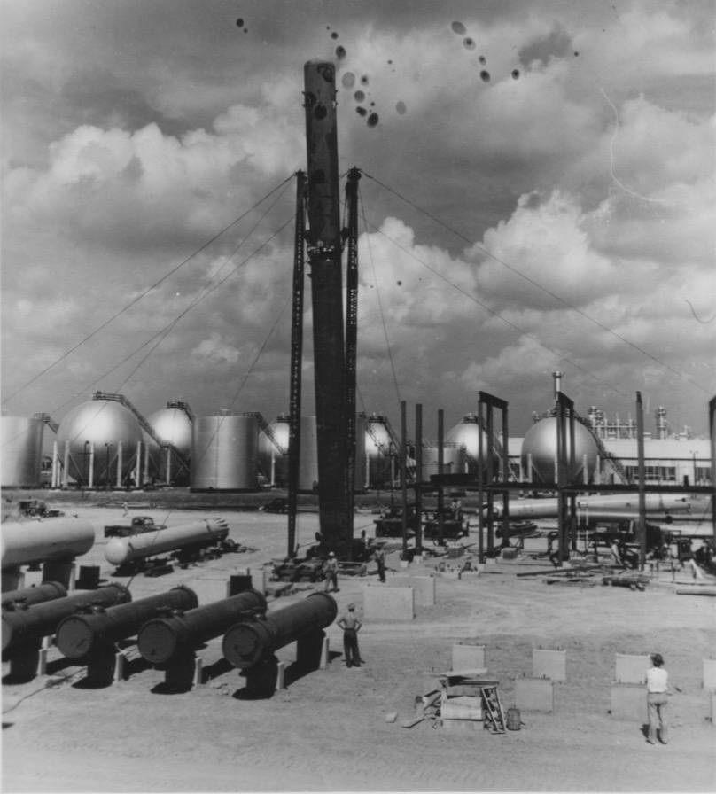
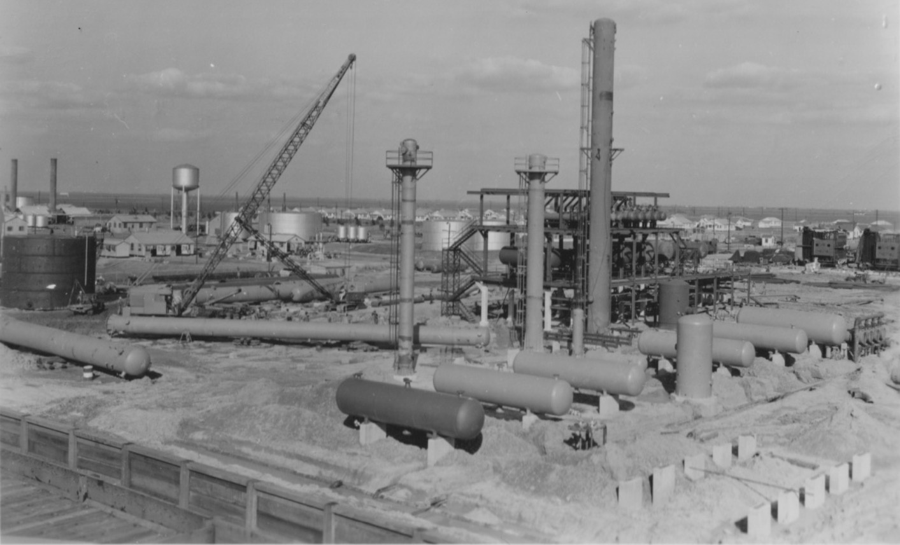
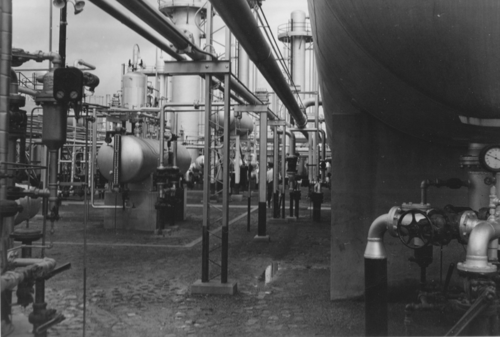
Images 1-5: Vinyl7 / Schlot.at
From Empty Fields to Stadiums
Rhodes stadium was originally built in 1981. Its namesake, Jack F. Rhodes, was an athlete and a Sam Houston State University Hall of Famer. he was also the head coach, athletic director of KatyISD, and principal of Katy High School until 1968. This stadium was used for Katy ISD's sports such as football, cheerleading, and soccer. In fact, seven high schools: Katy High School, James E. Taylor High School, Cinco Ranch High School, Mayde Creek High School, Seven Lakes High School, and Obra D. Tompkins High School, still use this stadium.
In the image, it is shown how empty the fields surround the stadium with a small amount of residential housing. Over time, the land around Rhodes became urbanized and established with many houses, new roads, small businesses, restaurants, and stores. This led to a 2nd stadium, called Legacy Stadium, that was constructed in 2017 for 70 million dollars. This is one of the biggest stadiums and now more used than Rhodes.
This means that overtime, there has been growth in the land used around it. More places were built on the once empty land now used for economic purposes.
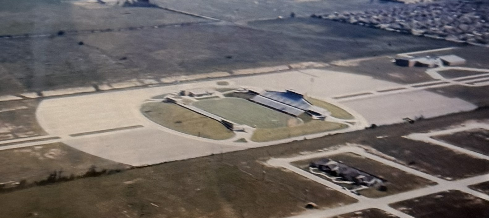
Image courtesy of The Johnny Nelson Katy Heritage Museum
Sources: Miles S. Ledet. "Legacy Stadium." Clio: Your Guide to History. May 5, 2019. Accessed December 23, 2025.
Historic Katy District Zoning (1910s)
Old map (overlay) courtesy of The Johnny Nelson Katy Heritage Museum